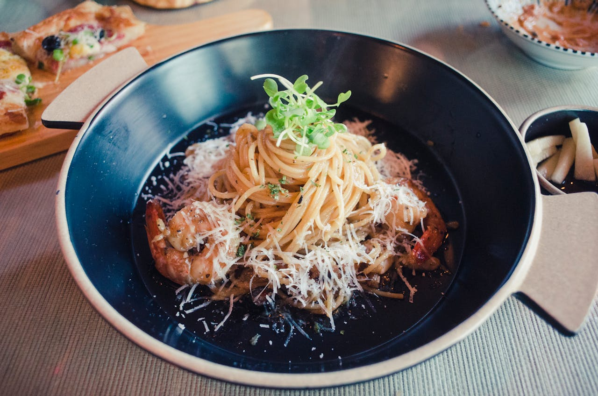

🥄 Ingredients
1 lb spaghetti pasta
6 large egg yolks
1 whole egg
1 cup freshly grated Pecorino Romano cheese
8 oz pancetta or guanciale, diced
4 cloves garlic, minced
1/2 cup dry white wine
Fresh black pepper to taste
Salt for pasta water
Fresh parsley for garnish
👨🍳 Instructions
1
Bring a large pot of salted water to boil. Cook spaghetti according to package directions until al dente.
2
In a bowl, whisk together egg yolks, whole egg, and grated Pecorino Romano cheese. Add plenty of black pepper.
3
Cook pancetta in a large skillet over medium heat until crispy. Add garlic and cook for 1 minute.
4
Add white wine to deglaze the pan, scraping up browned bits. Let wine reduce by half.
5
Reserve 1 cup pasta water before draining. Add hot pasta to the pancetta pan and toss.
6
Remove from heat. Quickly add egg mixture while tossing pasta. Add pasta water gradually until creamy.
7
Serve immediately with extra cheese, black pepper, and fresh parsley. Enjoy hot!